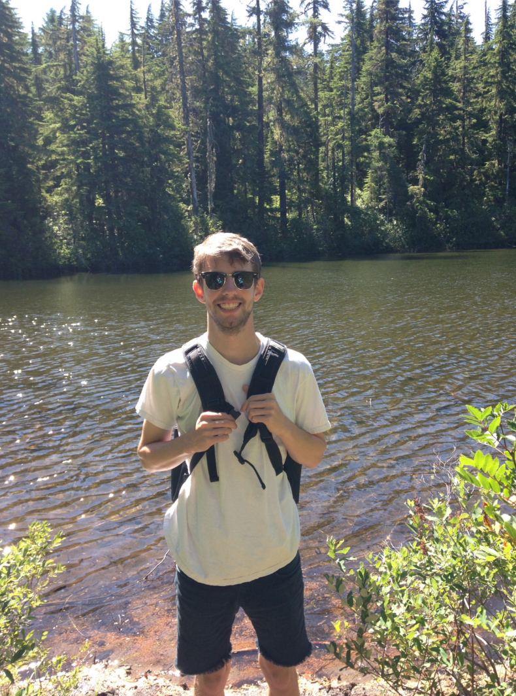

University of Oregon
I'm a fifth year graduate student in the Economics Department at the University of Oregon in Eugene, OR. I'm orignially from the suburbs of Philadelphia, PA, and I attended Temple University in Philadelphia during my undergrad years.
When I'm not researching or teaching, you can usually still find me in front of a screen: watching sports, playing with sports statistics, or trying to forecast the results in my fantasy baseball and football leagues. When I'm not in front of a screen, you can probably find me cycling, skiing, hiking, taking pictures, or (recently) cooking.